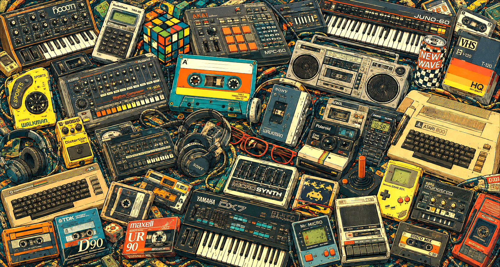
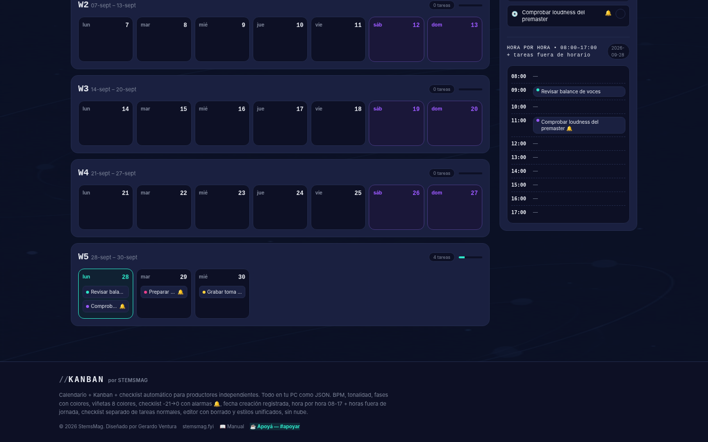
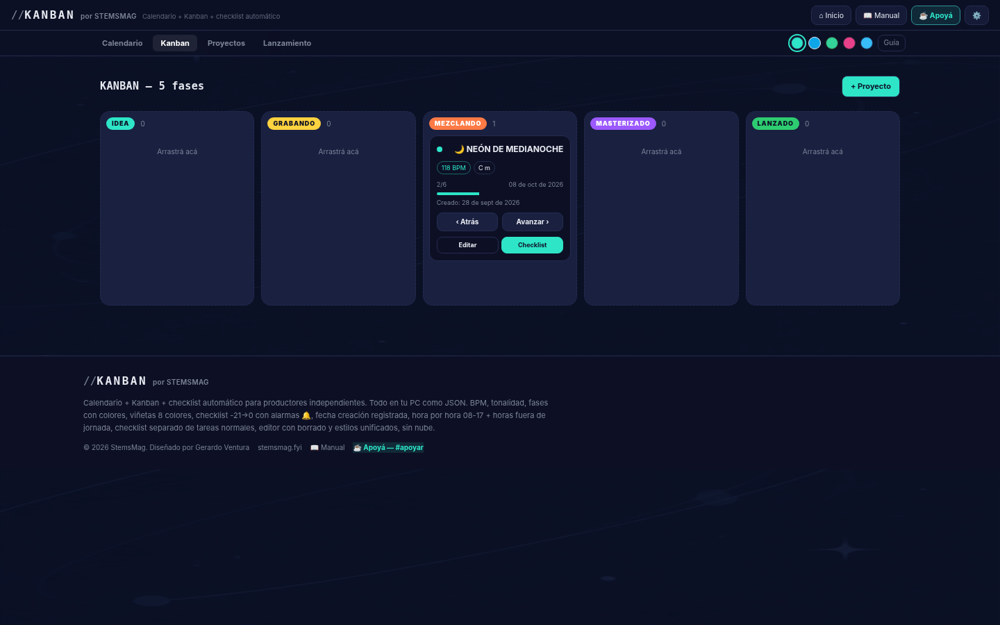
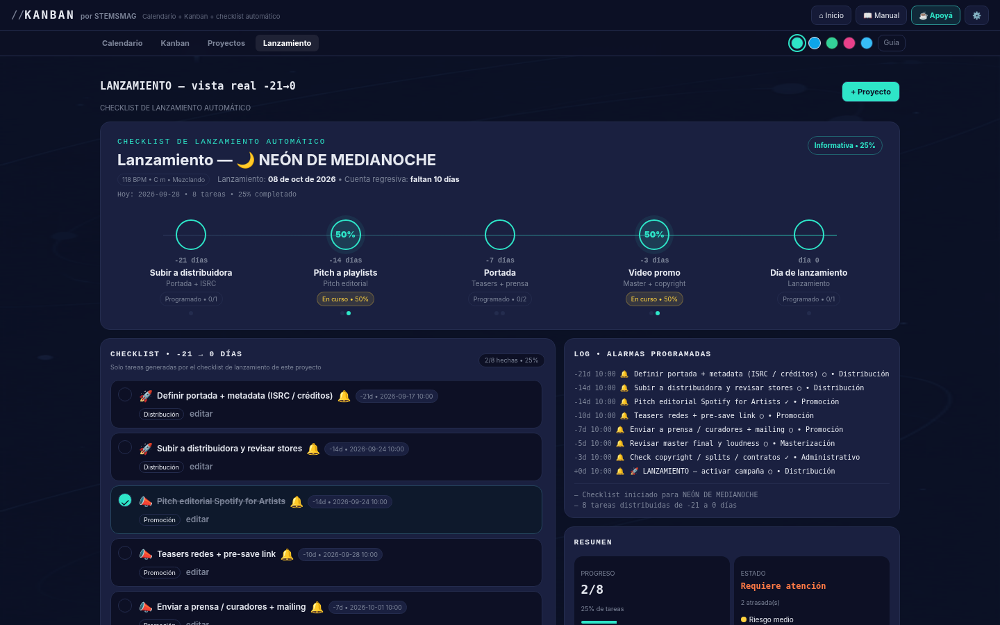
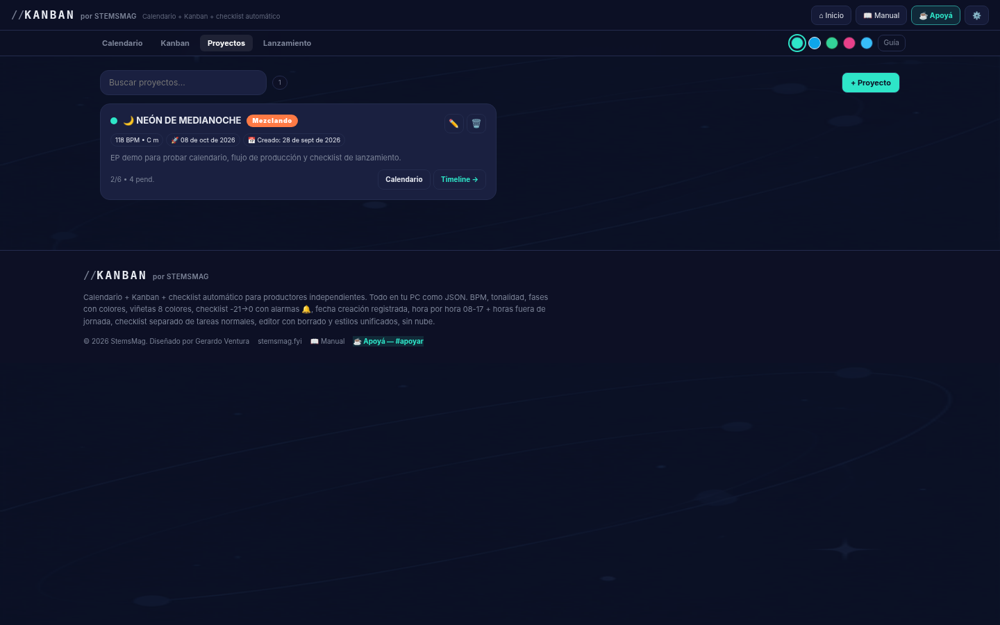

Calendario semanal, tablero Kanban con drag & drop, proyectos por fases y timeline de lanzamiento. 100% offline, archivo vinculado con autosave y alarmas con Web Audio API.
//KANBAN. Es una herramienta de gestión visual pensada para flujos creativos: lanzamientos musicales, producción de eventos, contenido. Todo vive en el navegador (LocalStorage + File System Access API). No hay login, no hay servidor.
Combina 4 vistas que normalmente viven en apps separadas: Calendario, Kanban, Proyectos y Lanzamiento (timeline). Cambias de vista sin perder contexto: una tarea creada en calendario aparece automáticamente en el tablero.

La vista por defecto es semana/mes: en producción musical trabajas en bloques de 7 días. Cada día es una columna con tareas apiladas a la derecha, con scroll independiente. El botón “Hoy” te lleva al día actual y resalta la semana en curso.
Las tareas muestran prioridad por color, etiqueta y fecha de vencimiento. Si arrastras una tarea de lunes a jueves, cambia su fecha automáticamente.
Aquí es donde se diferencia de un calendario bonito. Columnas configurables: Por hacer / En proceso / Hecho, con contadores, drag & drop nativo HTML5 (toast + vibración en móvil).

Cada proyecto tiene fase (idea → entrega), color y tareas asociadas. Puedes arrastrar un proyecto entre fases como si fuera una card grande. Eso permite ver de un vistazo qué proyectos están estancados en “En proceso”.
Esta es la joya para sellos y artistas. Vista Gantt simplificada con 10 semanas, fases de lanzamiento, barra de progreso y marca de “HOY”. Es lo mínimo para coordinar un release en una web app local.

Abrir una tarea no abre una página, abre un modal con todo: Pomodoro timer integrado (24:32 con start/pause), checklist con % completado, selector de prioridad, assignee, adjuntos, comentarios y fecha + hora para alarmas.

El truco de STEMS: puedes vincular un archivo .json en tu disco vía File System Access API. Una vez vinculado, cada cambio hace autosave silencioso. Sin “Guardar”. Si cierras la pestaña, sigue ahí.
KANBAN usa Web Audio API para alarmas musicales. 11 tonos (soft, pulse, chime, bell, siren…), con patrones rítmicos programados con OscillatorNode.
//KANBAN no intenta competir con Notion en funciones infinitas. Es un HTML con calendario, tablero y timeline listos, con guardado en archivo propio: una propuesta radicalmente simple para productores, sellos pequeños y equipos que no quieren subir su roadmap a la nube. El uso de Web Audio API para alarmas, el Pomodoro integrado y el archivo vinculado lo hacen sentir como una herramienta de estudio, no como un SaaS genérico. Si trabajas solo o en equipo de 2-3 y valoras privacidad y velocidad, es 9.1/10 sin dudar.